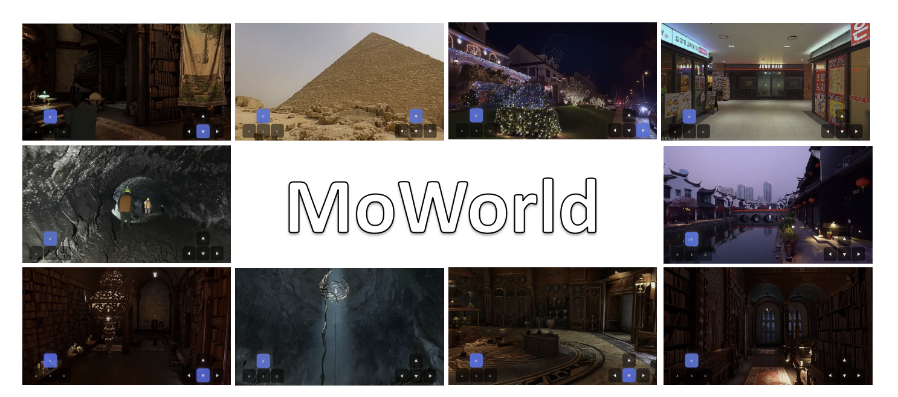
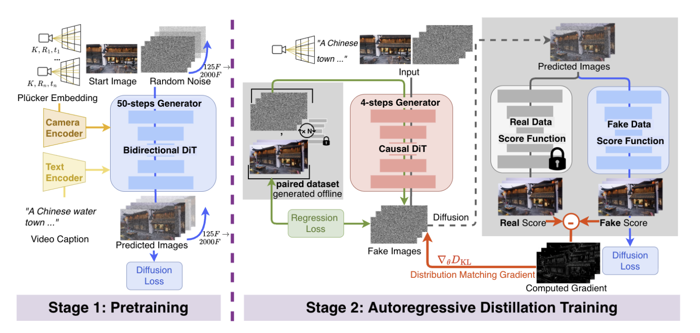

Cost-Efficient NPU Stack
MoWorld 实时交互世界模型
首个自主可控（纯国产）的实时交互世界模型，从训练、推理到部署全流程基于国产化平台构建，面向昇腾生态实现高帧率、低成本、可连续控制的视频世界生成。

Model Overview
模型简介
MoWorld 面向实时交互式视频世界模型构建，在同等 14B-MoE 模型尺寸下，通过 Ascend NPU 服务栈和并行推理优化，把推理成本降至 GPU 方案的约 20%-33%，同时把生成速度提升到 20-25 FPS。
自主可控
训练、推理、部署全流程基于国产化平台，面向昇腾生态构建实时交互世界模型服务能力。
实时交互
从 4-5 FPS 优化至 20-25 FPS，支持连续相机控制和低延迟交互反馈。
成本可控
单机 910C 价格约为单机 H100、H20、A100 的 1/2 至 2/3，14B-MoE 推理成本显著降低。
部署友好
围绕 Ascend 910C、CANN、PyTorch NPU、HCCL/HCCS 与 NPU 原生算子形成服务栈。
Video Demo
能力展示
以下视频按亮点展示 MoWorld 在实时交互、空间稳定、镜头控制和多样化场景上的能力。
亮点一：实时响应
按键响应仅为 1s 左右，且支持 2 分钟推理基本稳定。
MMoWorld · 实时交互世界模型
交互延迟交互延迟
亮点二：支持大场景
广阔外景生成稳定，广视角探索时空间结构不崩塌。
MMoWorld · 实时交互世界模型
空间稳定空间稳定
亮点三：一致性高
视角连续，镜头切换自然，适合导演级镜头调度。
MMoWorld · 实时交互世界模型
视角连续视角连续
亮点四：高清真实
场景真实、高清，支持 1080P 或更高分辨率输出，具备影视级镜头效果。
MMoWorld · 实时交互世界模型
1080P+1080P+
亮点五：风格多样
自然场景、二次元、游戏场景等类型均已完成支持。
MMoWorld · 实时交互世界模型
多风格多风格
亮点六：人物稳定
人物不飘移，建模稳定，人物细节保持更精细。
MMoWorld · 实时交互世界模型
人物建模人物建模
亮点七：镜头控制丝滑
接近云游戏体验，支持导演级镜头与 3D 级别环绕控制。
MMoWorld · 实时交互世界模型
相机控制相机控制
Data Engine
数据引擎
多源视频经过数据采集、几何补全与数据质检、视觉语言模型标注和预计算缓存，形成训练就绪样本。

Training
预训练 & 蒸馏
预训练阶段以视频基座为核心，蒸馏阶段压缩推理步数，并将双向 DiT 重构为自回归因果式 DiT。

Real-Time Inference
实时推理
面向 Ascend NPU 生态构建流水线层、并行层、算子层和底座基础设施，支撑低延迟实时视频流输出。

Results
展示结果
这一部分按参考页保留展示框架，具体视频、图片和路径后续补齐。
实时交互效果
大场景生成
室内重建
主展示视频待补
结果缩略图待补
重建对比素材待补
Applications
应用场景
室内场景重建
使用 MoWorld 生成的视频进行室内场景重建，目标精细度高，重建稳定，空间一致性好。
实时云游戏体验
通过连续相机控制探索生成世界，支撑低延迟漫游、镜头控制和交互式内容体验。
影视级镜头预演
面向大场景、真实光照与导演级镜头，快速生成可用于分镜、预演和概念验证的视频世界。
国产化推理部署
面向 Ascend 生态优化成本与吞吐，适合在国产化算力环境中进行规模化部署。